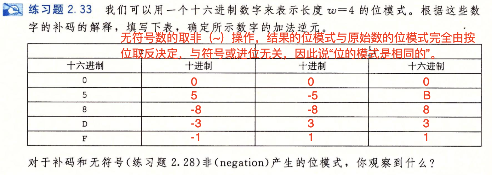
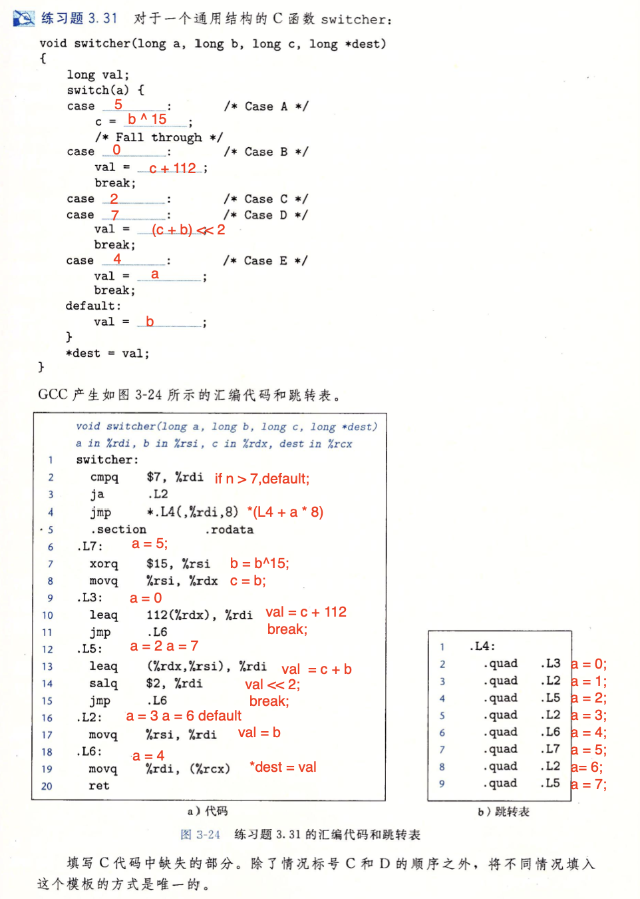

第二章
2.21
2.23
2.24
两种类型都是先截断（对对应的无符号数取模操作），补码的话再进行一次U2T转化；
2.33

2.40
2.44
A. 反例：\(x = -1, x - 1= 0\)；
B. \(x \& 0111_2 \ne
0111_2\)当\(x\)的低3位有1位等于0时即可成立，\(x << 29 < 0\)将\(x\)的低3位移到高三位。那么低三位如果全为1，后者为真，有0则前者为真，所以表达式恒为真；
C. 反例：\(x\)为一个比较大的正数，平方后超过\(2^{31} - 1\)；
D. 真：\(x = Tmin, -x =
Tmin\)，其余情况x如果是负数，那么-x一定是非负数；
E. 反例：\(x = Tmin, -x =
Tmin\)；
F.
真：首先，比较类型为无符号数比较；加法都按补码进行运算，两边二进制结果显然一致；
G.真：\(-y = \sim y + 1\rightarrow \sim y = -y
- 1\rightarrow x * \sim y + uy * ux = x * (-y + y - 1) =
-x\)；全部按二进制表示理解即可；
2.45
2.47
2.54
A. double范围和精度比int大；
B. 假，int转化为float可能会发生舍入；
C. 假，double转化为float会截断；
D. double范围和精度比float大；
E. 没毛病，只需改变符号位；
F. 两边都先转化为double类型再运算；
G. 没毛病，即使溢出到正无穷也是大于0；
H. 假，浮点数运算不满足结合律；
2.60
unsigned replace_byte(unsigned x, int i, unsigned char b) {
int i_times_8 = i << 3; // 将字节单位转化为位；
unsigned mask = 0xFF << i_times_8; // 将0xFF左移i个字节，得到第i个字节为FF，其余全为0的字符串；
// x & ~mask 可以将x的第i个字节清0；
// b << i_times_8 将b移动到第i个字节上；
// 两者进行或运算即可实现替换；
return (x & ~mask) | (b << i_times_8);
}2.65
int odd_ones(unsigned x) {
// x的高位和低位进行异或，如果1对0，得到1；如果1对1或0对0，得到0，那么高位有奇数个1还是偶数个1的信息就被转移到低位中；
x = x ^ (x >> 16); // 将x的高16位与低16位异或
x = x ^ (x >> 8);
x = x ^ (x >> 4);
x = x ^ (x >> 2);
x = x & 1;
return x;
}2.67
A. C标准中，在32位机器上，移位32位是一种未定义的行为；
B. 很简单，先移31位，再移一位即可；
int beyond_msb = 1 << 32;
// 改为
int beyond_msb = set_msb << 1;C. 类似地（16位机器上，移动n + 16位和移动n位效果一样）；
int set_msb = 1 << 15;
int beyond_msb = set_msb << 1;2.68
int lower_one_mask(int n) {
unsigned Part = -1; // 各位全1
unsigned len = sizeof(int) * 8 - n; // 右移位数
return (int)(Part >> len);
}第三章
3.1

3.2
movl %eax, (%rsp)
movw (%rax), %dx
movb $0xFF, %bl
movb (%rsp, %rdx, 4), %dl
movq (%rdx), %rax
movw %dx, (%rax)评价是别管Src和Dest，看哪个对涉及对寄存器取值了；
3.3
1.
%ebx不能用来存放内存地址！！！（此题存了立即数0xF的在内存中的地址）；
2. %rax配movq，movl配%eax；
3. Src和Dest都在对内存进行引用；
4. %sl是什么东西；
5. 立即数不能作为Dest；
6. %rdx和mol不匹配；
7. %si配movw；
3.4
3.5
void decode1(long *xp, long *yp, long *zp) {
long x = *xp;
long y = *yp;
long z = *zp;
*yp = x;
*zp = y;
*xp = z;
return;
}3.6
lea是直接取寄存器！！！
3.7
3.9
3.15
A. 4003fc + 0x02 = 4003fe；
B. 400431 + 0xf4 = 400425；
C. ja:400547；pop指定的地址 + 0x02 =
ja的跳转地址，所以pop:400545；
D. 4005ed + 0x ff ff ff 73 = 400560；
3.18
3.20
3.26
A. 中间翻译法
goto Test;
Loop:
body;
Test:
t = test;
if (t) goto Loop;
end;while (x != 0) {
val = x ^ val;
x = x >> 1;
}C. 从一个无符号长整数\(x\)的最高有效位开始，逐位移除最低有效位，直到剩下最后一个有效的非零位。然后检查该值的最低有效位是否为 1，并返回结果。即判断\(x\)的奇偶性；
3.27
// Jump-to-middle
init:
int result = 1;
int i = 2;
goto test;
loop:
result *= i;
i++;
test:
if i <= n:
goto loop;
done;
// guarded-do
init:
int result = 1;
int i = 2;
if (n < 1) goto end;
loop:
result *= i;
i++;
if (t) goto loop;
end;3.31

3.32

3.33
3.36
3.37
3.38
3.44
| P1 | |||||||
|---|---|---|---|---|---|---|---|
| 0 | 1 | 2 | 3 | 4 | 5 | 6 | 7 |
| i | i | i | i | c | X | X | X |
| 8 | 9 | 10 | 11 | 12 | 13 | 14 | 15 |
| j | j | j | j | d | X | X | X |
P1共占16个字节；
| P2 | |||||||
|---|---|---|---|---|---|---|---|
| 0 | 1 | 2 | 3 | 4 | 5 | 6 | 7 |
| i | i | i | i | c | d | X | X |
| 8 | 9 | 10 | 11 | 12 | 13 | 14 | 15 |
| j | j | j | j | j | j | j | j |
P2共占16个字节；
| P3 | |||||||
|---|---|---|---|---|---|---|---|
| 0 | 1 | 2 | 3 | 4 | 5 | 6 | 7 |
| w[0] | w[0] | w[1] | w[1] | w[2] | w[2] | c[0] | c[1] |
| 8 | 9 | ||||||
| c[2] | X |
P3共占10个字节；
| P4 | |||||||
|---|---|---|---|---|---|---|---|
| 0 | 1 | 2 | 3 | 4 | 5 | 6 | 7 |
| w | w | w | w | w | w | w | w |
| 8 | 9 | 10 | ... | ||||
| w | w | X | X | X | X | X | X |
| 16 | |||||||
| c | c | c | c | c | c | c | c |
| c | c | c | c | c | c | c | c |
| c | c | c | c | c | c | c | c |
P4共占40个字节；
| P5 | |||||||
|---|---|---|---|---|---|---|---|
| 0 | 1 | 2 | 3 | 4 | 5 | 6 | 7 |
| a | a | a | a | a | a | a | a |
| 8 | |||||||
| a | X | a | a | a | a | a | a |
| 16 | |||||||
| a | a | a | X | X | X | X | X |
| 24 | |||||||
| t | t | t | t | t | t | t | t |
| t | t | t | t | t | t | t | t |
P5共占40个字节；
3.45
| rec | |||||||
|---|---|---|---|---|---|---|---|
| 0 | 1 | 2 | 3 | 4 | 5 | 6 | 7 |
| a | a | a | a | a | a | a | a |
| 8 | |||||||
| b | b | ||||||
| 16 | |||||||
| c | c | c | c | c | c | c | c |
| 24 | 28 | ||||||
| d | e | e | e | e | |||
| 32 | |||||||
| f | |||||||
| 40 | |||||||
| g | g | g | g | g | g | g | g |
| 48 | |||||||
| h | h | h | h | X | X | X | X |
rec共占56个字节；
| rec' | |||||||
|---|---|---|---|---|---|---|---|
| 0 | 1 | 2 | 3 | 4 | 5 | 6 | 7 |
| a | a | a | a | a | a | a | a |
| 8 | |||||||
| c | c | c | c | c | c | c | c |
| 16 | |||||||
| g | g | g | g | g | g | g | g |
| 24 | 28 | ||||||
| e | e | e | e | h | h | h | h |
| 32 | 34 | 35 | |||||
| b | b | d | f |
rec‘总共占40个字节；
第七章
7.1

7.2
7.4
A. 4004de + 1 = 4004df（callq的机器码e8占一个字节）；
B. 0x 00 00 00 05，注意小端法！！！
7.5
重定位条目包含了以下信息：
* R_X86_64_PC32表示采用PC相对寻址法；
* offset表示偏移量为0xa = 10；
* addend可以修正偏移量；
\(r_{ptr} = 0x4004e8 - (0x4004d0 + 0xa) + (-4)
= 10 = 0x0a\)；
所以引用的值是0x 00 00 00
0a；在汇编代码中被更新为：e8 0a 00 00 00；
第十章
10.1
fd2 = 3原因是Close(fd1)后，文件描述符被释放；
10.2
c = ffd1读取一个字节后，文件位置确实++了，但fd1和fd2分两次打开，对应不同的描述符，从而对应不同的打开文件表，所以互不影响；
10.3
c = o父子进程共享同一个打开文件表；
10.5
c = odup2将fd1重定向到fd2；
最后祝自己明天考试好运吧！